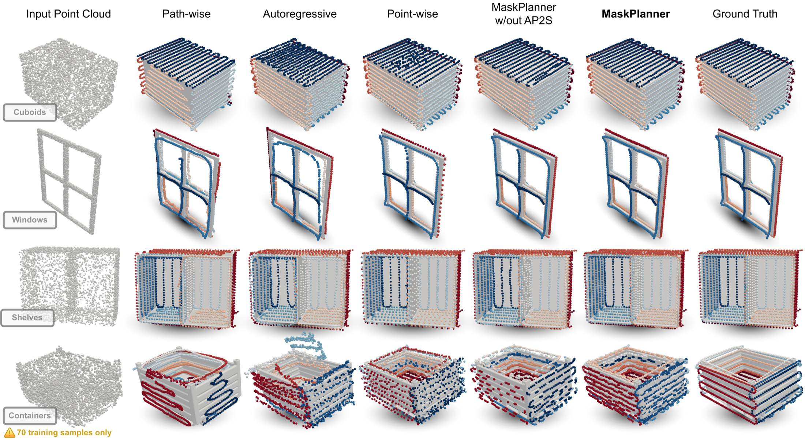

Abstract
Object-Centric Motion Generation (OCMG) plays a key role in a variety of industrial applications—such as robotic spray painting and welding—requiring efficient, scalable, and generalizable algorithms to plan multiple long-horizon trajectories over free-form 3D objects.
However, existing solutions rely on specialized heuristics, expensive optimization routines, or restrictive geometry assumptions that limit their adaptability to real-world scenarios.
In this work, we introduce a novel, fully data-driven framework that tackles OCMG directly from 3D point clouds, learning to generalize expert path patterns across free-form surfaces.
We propose MaskPlanner, a deep learning method that predicts local path segments for a given object while simultaneously inferring “path masks” to group these segments into distinct paths. This design induces the network to capture both local geometric patterns and global task requirements in a single forward pass.
Extensive experimentation on a realistic robotic spray painting scenario shows that our approach attains near-complete coverage (above 99%) for unseen objects, while it remains task-agnostic and does not explicitly optimize for paint deposition.
Moreover, our real-world validation on a 6-DoF specialized painting robot demonstrates that the generated paths are directly executable and yield expert-level painting quality.
We additionally provide empirical evidence that our approach remains complementary to downstream trajectory optimization methods, and applicable to tasks beyond spray painting.
Authored by Gabriele Tiboni, Raffaello Camoriano, and Tatiana Tommasi from Politecnico di Torino.

Main qualitative results: the raw network predictions are shown for a representative test sample of each object Category. Points displayed with the same color belong to the same path. Point orientations are not visible.Dataset
Download the Extended PaintNet dataset at https://zenodo.org/records/14967945.
You may unzip the object categories (cuboids, windows, shelves, containers) at the link above into a local path path/to/dataset/. Then, add the environment variable export PAINTNET_ROOT=path/to/dataset/.
Acknowledgments
This study was carried out within the FAIR — Future Artificial Intelligence Research and received funding from the European Union Next-GenerationEU (PIANO NAZIONALE DI RIPRESA E RESILIENZA (PNRR) – MISSIONE 4 COMPONENTE 2, INVESTIMENTO 1.3 – D.D. 1555 11/10/2022, PE00000013). This manuscript reflects only the authors’ views and opinions; neither the European Union nor the European Commission can be considered responsible for them.
We also acknowledge the support of the European H2020 ELISE project (www.elise-ai.eu) and the CINECA award under the ISCRA initiative (DRE-URL - HP10CF881L) for the availability of HPC resources and support.
This work was supported by the EFORT group, providing the authors with domain knowledge, original object meshes, trajectory data, and access to the proprietary spray painting simulator and hardware used during the experiments.
Citing
@ARTICLE{tibonimaskplanner,
author={Tiboni, Gabriele and Camoriano, Raffaello and Tommasi, Tatiana},
journal={IEEE Transactions on Robotics},
title={MaskPlanner: A Framework for 3D Learning-Based Object-Centric Motion Generation and Applications to Robotic Spray Painting},
year={2026},
volume={},
number={},
pages={1-20},
doi={10.1109/TRO.2026.3699455}
}